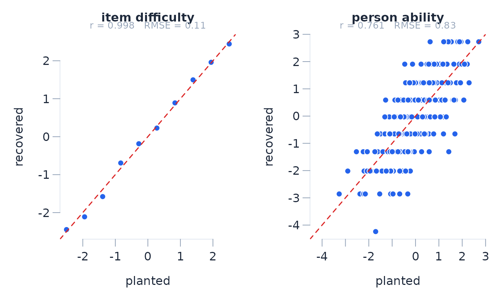

Simulation-based checks of Rasch diagnostics
Josh McGrane
Source:vignettes/plant-and-detect.Rmd
plant-and-detect.RmdSimulating from the models
Simulation is useful when the sampling behaviour of an estimate or diagnostic depends on the test design. The package includes simulators for the ordinary Rasch models (Rasch 1960; Andrich and Marais 2019), many-facet models, extended frames of reference (Humphry 2005; Humphry and Andrich 2008), and comparative judgement of paired comparisons (Andrich 1978; Tutz 1986). They can generate model-conforming data or introduce a specified departure.
Each simulator stores the generating values in
attr(x, "truth").
d <- simulate_rasch(n_persons = 400, n_items = 10, seed = 101)
names(attr(d, "truth"))
#> [1] "layout" "description" "model"
#> [4] "n_persons" "n_items" "person_id"
#> [7] "theta" "theta2" "difficulty"
#> [10] "thresholds" "discrimination" "guessing"
#> [13] "calibration_truth" "departure_types" "groups"
#> [16] "dim_items" "dif_items" "careless_idx"
#> [19] "style_idx" "speeded_idx" "missing_cells"
#> [22] "planted"Parameter recovery
sim_recovery() compares fitted parameters with their
generating values on the same response scale and reference. In an
unanchored Rasch fit, locations are centred because the origin is
arbitrary. Recovery is refused if fitting removes or merges response
categories.
fit <- rasch(d, id = "id")
rec <- sim_recovery(fit, d)
rec
#> Generating and fitted parameter comparison:
#> item difficulty n=10 r=0.998 RMSE=0.108 bias=NA
#> person ability n=400 r=0.761 RMSE=0.826 bias=NA
plot_recovery(rec)
Item locations pool information over persons. Each person location is based on the items answered by that person, so person recovery is usually less precise on a short test. This difference should be judged against the reported standard errors rather than the raw recovery correlations alone.
Item misfit
The discrimination argument changes an item’s response
slope. Values above one produce more deterministic responses than the
Rasch model expects; values below one produce less deterministic
responses.
disc <- rep(1, 10)
disc[5] <- 2.5
disc[6] <- 0.4
d2 <- simulate_rasch(400, 10, discrimination = disc, seed = 21)
fit2 <- rasch(d2, id = "id")
fit2$items[, c("item", "location", "infit_ms", "outfit_ms")]
#> item location infit_ms outfit_ms
#> I01 -2.522 0.899 0.772
#> I02 -1.885 1.041 0.941
#> I03 -1.507 1.012 0.896
#> I04 -0.701 1.052 0.991
#> I05 -0.387 0.913 0.849
#> I06 0.206 1.262 1.240
#> I07 0.773 1.044 1.046
#> I08 1.463 1.083 0.944
#> I09 2.103 1.013 0.836
#> I10 2.457 1.038 0.765Over-discrimination tends to give mean-square statistics below one; under-discrimination tends to give values above one. Their sampling variation still depends on the item location, sample, and test length.
Differential item functioning
The dif argument shifts selected items for a person
group. Here I06 differs by one logit in the second group.
d3 <- simulate_rasch(
500, 10,
dif = list(items = "I06", uniform = 1),
n_groups = 2,
seed = 303
)
fit3 <- rasch(d3, id = "id", factors = "group")
da <- dif_anova(fit3)
da$summary[, c("item", "term", "F_uniform", "p_uniform_adj", "uniform_DIF")]
#> item term F_uniform p_uniform_adj uniform_DIF
#> I01 group 0.187 1.000
#> I02 group 3.197 1.000
#> I03 group 0.175 1.000
#> I04 group 0.410 1.000
#> I05 group 3.717 0.980
#> I06 group 17.499 < 0.001 *
#> I07 group 0.573 1.000
#> I08 group 0.009 1.000
#> I09 group 0.137 1.000
#> I10 group 0.082 1.000dif_anova tests invariance. dif_size
resolves the item by group and reports the difference between the
resolved locations in logits.
dif_size(fit3, "I06", by = "group")
#> DIF size for I06 by group (resolved locations, logits)
#> level location se weak n
#> g1 0.262 0.140 0 250
#> g2 1.266 0.162 0 250
#> level_a level_b difference se t df p p_adj lower upper
#> g1 g2 -1.004 0.234 -4.287 Inf < 0.001 < 0.001 -1.463 -0.545
#> significant practical p_beyond_A p_beyond_A_adj ets signed_area
#> * >= 0.50 0.007 0.007 C-
#> p adjusted by holm over 1 pairwise comparison(s); practical criterion 0.50 logitsA simulation study of DIF should record false-positive rates for invariant items as well as detection of the shifted item. Sample size, group imbalance, targeting, test length, and shift size should be varied separately.
Local response dependence
The dependence argument makes one item’s response partly
follow another. residual_correlations reports Yen’s Q3 and
adjusted Q3. Because adjusted Q3 has no universal critical value,
flag is a screening threshold supplied by the analyst (Yen
1984; Christensen, Makransky and Horton 2017).
d4 <- simulate_rasch(
500, 10,
dependence = list(
pairs = list(c("I04", "I05")),
strength = 1.8
),
seed = 41
)
fit4 <- rasch(d4, id = "id")
rc <- residual_correlations(fit4, flag = 0.20)
head(rc$pairs, 3)
#> item_a item_b q3 q3_star flagged
#> 1 I04 I05 0.170343 0.2688 TRUE
#> 2 I02 I10 0.042300 0.1407 FALSE
#> 3 I02 I09 0.002477 0.1009 FALSEdependence_magnitude resolves the dependent item by the
response to the independent item and expresses the displacement on the
logit scale (Andrich and Kreiner 2010).
dependence_magnitude(fit4, dependent = "I05", independent = "I04")
#> Response dependence of I05 on I04 (Andrich & Kreiner resolution)
#> d = 0.760 logits (se 0.139), z = 5.48, p = < 0.001Paired comparisons
The paired-comparison simulator can introduce erratic judges, ties, position effects, or within-judge dependence. In this example, one quarter of the judges respond at random.
b <- simulate_btl(
n_objects = 7,
n_judges = 8,
reps_per_pair = 30,
erratic_judges = 0.25,
seed = 61
)
bt <- btl(b, "object_a", "object_b", winner = "winner", judge = "judge")
bt$judges[order(-bt$judges$fit_resid), ]
#> judge n infit_ms outfit_ms fit_resid df_fit
#> J3 78 1.421 1.544 4.095 77.257
#> J6 79 1.343 1.412 3.044 78.248
#> J5 79 0.961 0.957 -0.363 78.248
#> J1 79 0.874 0.867 -1.164 78.248
#> J7 79 0.903 0.854 -1.356 78.248
#> J4 79 0.864 0.823 -1.688 78.248
#> J8 78 0.851 0.818 -1.742 77.257
#> J2 79 0.845 0.813 -1.901 78.248Judge fit describes agreement with the common object scale. Transitivity is a different summary: it counts circular triads in the observed comparisons.
tr <- btl_transitivity(bt)
tr$summary
#> n_objects n_pairs n_triples n_circular circular_rate chance_rate consistency
#> 7 21 26 0 0 0.250 1
#> zeta
#>
head(tr$judges)
#> judge n_comparisons n_triples n_circular circular_rate consistency
#> J6 79 19 7 0.368 -0.474
#> J3 78 10 3 0.300 -0.200
#> J1 79 25 2 0.080 0.680
#> J7 79 25 2 0.080 0.680
#> J2 79 26 0 0.000 1.000
#> J4 79 16 0 0.000 1.000Repeated simulation
sim_replicate generates datasets with successive seeds.
The same analysis can then be applied to each dataset to estimate bias,
coverage, rejection rates, or power.
batch <- sim_replicate(
simulate_rasch, 10,
n_persons = 400,
n_items = 8,
dif = list(items = "I04", uniform = 0.8),
n_groups = 2,
seed = 700
)
flagged <- vapply(batch, function(dd) {
s <- dif_anova(rasch(dd, id = "id", factors = "group"))$summary
isTRUE(s$uniform_DIF[s$item == "I04"])
}, logical(1))
mean(flagged)
#> [1] 0.5Ten replicates demonstrate the workflow but do not give a stable power estimate. For a Monte Carlo proportion \(\hat p\) based on \(R\) independent replicates, the estimated Monte Carlo standard error is
\[ \operatorname{MCSE}(\hat p)= \sqrt{\frac{\hat p(1-\hat p)}{R}}. \]
The number of attempted, refused, and non-converged fits should be reported. Bias and coverage should be calculated for each generating condition rather than after pooling conditions with different true values.
Validation studies
The repository contains the simulation studies used to check
parameter recovery, standard errors, confidence-interval coverage, null
rejection rates, power, and identification guards. The scripts and
result tables are under tools/simval/; they are excluded
from the CRAN source package for size, and are computationally intensive
to re-run. The examples in this vignette use small runs and are intended
as templates for design-specific studies.
One placement in the literature is worth making explicit. Wu and Adams (2013) derive the fit mean squares’ null variance as approximately \(2/N\) and show the mean square measures relative characteristic-curve slope — both confirmed empirically below — but conclude that the standardised statistics have a sample-size-independent null, attributing contrary reports to flawed simulation designs or to real data’s genuine misfit surfacing as samples grow. Wolfe (2013) reached for the same remedy this package ships — bootstrapped reference values, generated at the estimated parameters — and found it adequate at his single 1,000-person design. The item-fit rows below show a third mechanism neither account covers: with data generated from the model and eight items, infit z beyond 1.96 flags 11.5% of correctly fitting items at 250 persons and 68.4% at 4,000, because the statistics are computed at estimated parameters. The bootstrap rows alongside show the same statistics calibrated once each replicate repeats the estimation.
The corrected principal-component kurtosis was also checked against
the published polynomial coefficients. Full-PC and unrestricted PCM
agreed through four thresholds. Recovery studies at four, five and six
thresholds gave mean item-wise 95% coverage of 95.5%, 94.0% and 95.2%,
respectively (100 datasets per condition; Monte Carlo SE 0.74–0.99
percentage points). These are limited recovery checks, not null-size
estimates; the scripts and complete accounting are in
tools/simval/.
For CJ extended frames, 50 shared-, partially shared- and disjoint-judge designs checked conditional panel-unit covariance against independently stacked judge scores. Agreement was within 1.4e-17. This verifies covariance propagation, not confidence-interval coverage; the default judge bootstrap is unchanged.
For item-set EFRM, eight fixed-data checks covered two sets, complete three-set overlap, pairwise booklets and an indirect chain. All fits converged; 465 of 480 requested hybrid draws were usable. Separate fault-injection tests verify that a failed supported link invalidates the whole replicate. These check numerical behaviour and accounting, not coverage.
Installed-package tests also check seeded bootstrap agreement between serial and socket-worker execution under default and non-default random-number generators. These are reproducibility checks, not additional calibration studies.
The principal calibration results, each carried with its script and provenance in the result tables:
| Quantity | Design | Result |
|---|---|---|
lr_test adjusted size |
500 persons, 8 items, 3 categories | 4.7% at the 0.05 level (2,000 replicates) |
lr_test small-sample edge |
300 persons, 12 items, 4 categories | 6.1% among 1,927/2,000 admissible replicates |
dependence_magnitude size |
800 persons, 10 items | 7.5% pooled-variance (pre-fix) to 4.8% covariance-based |
| Class-interval item fit | 8–30 dichotomous items, 600 persons | HC3 was rejected (21.9–48.3% item-wise Type I); conventional ANOVA remained approximate, whereas item-trait Holm familywise error was 4.0–7.0% from ten items onward and 12.0–17.0% with eight items (200 replicates each) |
| Item fit bootstrap calibration | 8 dichotomous items, 250 to 4,000 persons; 100 replicates of B = 399 score-conditional draws | asymptotic Type I error rose with the sample — item-trait chi-square 8.9% to 99.9%, infit z 11.5% to 68.4% — while the conditional bootstrap held the chi-square at 3.9-5.1%, the fit residual at 3.9-5.4%, infit z at 3.3-5.0%, outfit z at 3.7-5.5%, the whole-test total at 2.0-8.0%, and Holm familywise error at 2.0-8.0% (chi-square) and 2.0-6.0% (fit residual) across every sample size |
| Item fit bootstrap, polytomous designs | four-category PCM and RSM at 1,000 persons | calibration held at 4.1-5.1% (PCM) and 5.1-5.6% (RSM) |
| Item fit bootstrap, linked booklets | 100 datasets, 400 persons x 15 items, informative missingness; B = 600 | item-wise chi-square rejection was 5.3%; Holm familywise rejection was 7% for chi-square and 6% for fit residuals (MCSE 2.6 and 2.4 percentage points). All 60,000 draws were usable. This rerun replaces the earlier results obtained with a fixed global interval count |
| Item fit bootstrap, unequal exposure | 100 datasets, 400 persons x 8 items, with two items answered by 120 persons; B = 399 | item-wise chi-square rejection was 3.6%; Holm familywise rejection was 3% for both chi-square and fit residuals (MCSE 1.7 percentage points). All 39,900 draws were usable |
| Repeated-ID item fit | 320 persons x 6 items, with every response row repeated under the same ID | duplication left item estimates and the person-clustered covariance unchanged but duplicated the evidence entering row-based fit references. Ordinary item-fit probabilities are therefore withheld and the item-fit bootstrap is refused when IDs repeat; fit statistics remain descriptive and repeated-measures DIF remains available |
| Person-subset dimensionality test | 400 persons; 30 dichotomous or 20 four-category items; B = 99 | the uncalibrated residual-derived split rejected 15% and 41% of null datasets. Bootstrap rejection was 5% and 9% (MCSE 2.2 and 2.9 points), while a split fixed in advance rejected none. Power was 100% for the planted second dimension (100 datasets per condition; no refusals) |
| Dimensionality magnitude sample handling | 100 datasets across complete, bifactor, missing-response and partial-credit designs | matched-sample PSI agreed with a separate calculation to within 1.2e-16; complete-data results were unchanged. This checks the calculation, not magnitude bias or coverage |
| Score-conditional scree reference | 400 persons x 10 items; dichotomous, PCM, RSM, booklet and explanatory designs; 50 reference draws | familywise error over ten components was 2.0–5.5% and 4.0% overall; power was 98.5–100% in complete designs and 71.5% with booklet missingness (200 datasets per condition; no refusals) |
| Person fit bootstrap | 240 persons x 12 dichotomous items; well-targeted four-category PCM at 500 persons; B = 99 | marginal fit-residual error was 2.41% and 3.81%; leave-one-out maxT familywise error was 5% and 6% (100 datasets per design; no refusals). A broad 240-person PCM stress design refused 71/100 datasets because too many conditional refits lost sparse categories, so its 29 conditional results are not used as calibration evidence |
| Paired-comparison fit bootstrap | 6 objects x 20 judges; dichotomous and four-category responses; B = 99 | total-test, pair-family, object-family and judge-family error was 3%, 3%, 1% and 2% for dichotomous responses and 3%, 8%, 8% and 3% for polytomous responses. The two 8% estimates have MCSE 2.7 points (100 datasets per design; no refusals) |
| Paired-comparison fit bootstrap with history | 6 objects x 30 judges; exposure 0.5 and carry-over 0.4 fitted jointly; B = 199 | total-test, pair-family and marginal-judge results are unaffected. Earlier object- and judge-family rows used the superseded maxT standardisation and are retained only as provenance |
| Person and judge fit-bootstrap power | 10% random responders in a 240-person, 12-item test; 20% erratic judges in a 6-object, 20-judge design | per-affected-person detection was 40.6% marginal and 5.4% after joint adjustment, with no clean-person familywise flags; per-affected-judge detection was 21.5% marginal and 5.3% adjusted, with 2.0% clean-judge familywise error (100 datasets per design, B = 99; zero non-convergence, with no other person-refit failures and four other judge-refit failures) |
| Item fit bootstrap power | slope 2.5 and 0.5 planted on a central item, 500 and 2,000 persons | for over-discrimination, Holm-adjusted chi-square power was 0.95 and 1.00 with clean-item familywise error of 3% and 4%; fit-residual power was 0.91 and 1.00, but its clean-item familywise error rose from 5% to 19%. Under-discrimination is invisible to the class-interval statistic by construction (a flatter item carries less of the selection bias, so its chi-square is smaller than a fitting item’s) and is caught by the fit residual at power 0.45 and 1.00. At 2,000 persons, contamination from the strong departure raised marginal clean-item error to 16.0% for the chi-square and 11.7% for the fit residual, with corresponding familywise error of 22% and 13% |
| Item fit bootstrap worker parity | 500 x 10 dichotomous and 4,000 x 30 four-category designs, 1 to 8 workers | every worker count reproduced the serial result exactly; 4 workers ran 1.8x and 3.0x the serial speed, 8 workers 1.7x and 4.7x, against 0.54 s of cluster startup |
| Repeated-measures DIF follow-up | 10:90 nuisance-cell imbalance | 5.25% size for a main effect and 5.4% for a mixed interaction (2,000 replicates each); the superseded person-frequency shortcut targeted a different contrast |
| Multifactor DIF magnitudes | correlated, unbalanced 3:1:1:3 two-factor cells with planted 1- and 2-logit effects | equal-cell marginal estimates had biases -0.021 and +0.017 logits for ordinary Rasch DIF and +0.026 and +0.032 for paired-comparison DIF; coverage was 0.92-0.96 (100 replicates per model) |
| Ordinary DIF covariance | balanced, 1:4 ability imbalance, unequal observations/person, and a three-level 1:2:3 factor | hybrid HC3-uniform/residual-ANOVA-non-uniform familywise error 4.0%, 6.4%, 4.6%, and 6.2%; full HC3 reached 22.0% and 20.2% in the two imbalanced designs and was rejected (500 replicates each) |
| Balanced homoskedastic DIF | two- and three-level factors, 10–150 observations per group-by-interval cell | hybrid familywise error 4.3–5.2%; under local alternatives the classical power advantage declined from 3.10 points at ten per cell to 0.84, 0.42, and 0.16 at 30, 75, and 150 for two levels, and from 1.72 at ten to 0.54 at 50 for three levels (5,000 paired replicates each) |
| DIF bootstrap sensitivity | dichotomous data, four-category PCM and RSM data, three-level groups, correlated person factors, and public-function conformance passes over ordinary, explanatory, Multiple Ratings, Extended Frames and Comparative Judgement fits | preserving sufficient scores and refitting under the ordinary Rasch null gave acceptable global-null calibration but was usually more conservative and less powerful than the hybrid analysis. Under 0.5- and 0.9-logit partial alternatives, affected-member primary/bootstrap power was 5/8% and 51/49% for explanatory Rasch, 23/23% and 78/74% for Multiple Ratings, 6/8% and 31/25% for Extended Frames, and 7/8% and 15/17% for Comparative Judgement (100 attempted datasets per cell; Extended Frames results conditional on 83 and 80 analysed datasets). Invariant-member familywise error reached 23% primary and 20% bootstrap in the stronger Multiple Ratings condition. The bootstrap can attenuate contamination, but is a sensitivity analysis under the fitted global invariant null rather than a replacement for the primary analysis or a score-purification procedure |
| Repeated-measures DIF bootstrap | group crossed with four observations of occasion; balanced Rasch null and local-dependence stress | primary/bootstrap familywise error was 6.9/4.9% and 2.9/2.3% over 350 datasets per condition. Uniform occasion-DIF power at 0.7 and 1.2 logits was 48.8/41.6% and 98.4/96.0%; adjusted non-uniform power was only 2.4/2.4% and 5.6/4.8% for slope increments of 0.8 and 1.5. Invariant-item familywise error was no greater than 4.8% (125 datasets per alternative). The earlier panel-loss cell used the superseded marginal adjustment and does not validate the current incomplete-panel procedure |
| Incomplete-panel DIF joint adjustment | correlated person factors, unequal occasion coverage and heteroskedastic known residuals; 600 persons | marginal uniform/non-uniform rejection was 5.7/5.3% over 3,000 null datasets (MCSE 0.42/0.41 percentage points). A separate end-to-end Rasch check gave 3.0% rejection for a null factor on an item carrying another factor’s DIF (200 datasets; MCSE 1.21 points). All datasets were usable. These check primary marginal tests, not bootstrap or familywise calibration |
| DIF score purification | four-category PCM and RSM data, plus two correlated person factors | preselecting a five-item anchor scale was liberal and leave-one-out matching was rejected; the public split-and-refit procedure retained uniform-DIF power and left 4.0–5.6% familywise error among invariant items, while a strongest-item recalibration was promising for non-uniform DIF but is not yet an automatic remedy (500 replicates per refined condition) |
| BTL-DIF pairwise inference | 6 objects, 8 or 10 judges per factor level | 5.5% and 4.83% size when balanced; 5.0% with 10 raw/9.31 effective judges per level (2,000-replicate top-up); omnibus and pairwise inference are withheld below eight judges or eight effective judges per level |
| BTL-DIF multi-cell contrasts | balanced 2 by 2 judge cells, 12 judges per cell | the conservative weakest-cell reference gave 3.6% Type I error and 0.964 coverage; the superseded pooled-count extension gave 6.2% and 0.938 (500 replicates) |
| BTL-DIF omnibus under unequal precision | 8 versus 16 judges, fourfold variance ratio | classical Type I 11.7% or 1.8% depending on the allocation; HC3 Type I 5.6% and 4.0% (10,000 replicates each) |
| BTL core cluster covariance | 10 balanced judges; 20 judges with one carrying 20% | CR1 Type I 5.4% and 4.2%, coverage 94.6% and 95.8%; delete-one-judge Type I 5.6% and 4.0%, coverage 94.4% and 96.0% (500 replicates each); no default change |
| Superitem spread test | 900 persons, 8 items | 5.2% size at the binomial boundary (1,000 replicates); 100% power under the planted dependence condition (400 replicates) |
| EFRM set-unit linking | 200 persons/group, 6 items/set (500 null datasets); boundary cell with 100 persons/group and 4 items/set (1,000 attempts) | supported-design Holm familywise error 3.5% for the omnibus family and 1.6% for individual follow-ups (489 analysed, 11 refused); boundary rates 5.2% and 2.5% among 483 analysed fits, with 493 refusals and 24 non-convergences; raw marginal hybrid Type I remained 4.0-5.0% in the larger distributional studies |
| Crossed EFRM factorial tests | 400 persons, 100 in each cell of a balanced 2 by 2 design, 12 dichotomous items | fresh-seed Holm familywise error 5.55% (2,000 replicates; 5.93% pooled over 3,000); marginal rates 5.25-5.75%; adjusted power 73% and 100% for region unit ratios 1.25 and 1.50 |
| EFRM compiled-kernel parity | demonstration data, 30 seed-paired hybrid bootstrap replicates | largest absolute difference from the retained R implementation 1.30e-11 across set units, standard errors, origins, thresholds and edge likelihoods; all convergence flags agreed |
| EFRM parallel-bootstrap parity | demonstration data, 300 hybrid replicates; simulated data, 30 full-bootstrap replicates | serial, two-worker and four-worker fits used the same pre-generated samples and agreed exactly on every checked estimate and convergence flag |
| BTL-EFRM parallel-bootstrap parity | 3 sets, 2 panels, 20 judges, 200 judge-bootstrap replicates | serial and default four-worker fits used the same pre-generated judge resamples and agreed exactly on the complete reported result, apart from the recorded worker count; elapsed time fell from 17.34 to 5.47 seconds on the executing machine |
| BTL-EFRM bootstrap inference | 6 or 12 judges/panel, 6 objects/set, 20 repetitions/pair | with six judges per panel, raw marginal Type I was 3.3% for panel units, 6.7% for set units and 6.0% for origins; Holm familywise error was 3.9% across omnibus decisions and 3.0% across follow-ups, while set-unit coverage was 0.900 (1,000 null fits). With 12 judges per panel and the default 200 resamples, raw set-unit Type I was 4.6%, SE ratio 0.992 and coverage 0.934 (500 null fits) |
| BTL-EFRM fit coherence | 3 sets, 3 panels, 8/4 to 72/36 within/cross repetitions | reported likelihoods agreed with likelihoods reconstructed from all fitted probabilities to numerical precision; mean common-scale object RMSE fell from 0.401 to 0.123 as information increased (180 attempted fits, 2 refused) |
| MFRM interaction omnibus | 50 or 200 persons, 6 raters, 25 df | 4.3% and 5.2% Type I error (600 fixed-truth replicates each);
probabilities use the least-supported item-by-level cell and require
max(30, q + 2) effective persons |
| MFRM multifactor DIF | 500 persons, 8 items, 6 raters | 4.7% familywise error with balanced raters and 3.8% when one group has two raters (1,000 replicates) |
| Frame-invariance bootstrap size | 500 persons/frame, 8 common items | 3.0% combined Holm familywise error; SE ratios 1.00 locations and 1.03 discrimination (300 replicates) |
| Frame-invariance bootstrap power | two affected items, 500 persons/frame | 96.3% for a one-logit location shift; 9.6% for a 1.5-fold discrimination change (120 replicates) |
| Comparative judgement contrasts | 10-50 judges, balanced | 5.0% size, 94.5% coverage (1,200 replicates) |
| Effective-judge thresholds | one judge with 15-50% of comparisons | ~9% at 4 effective, ~7% at 6-7, nominal when balanced |
| Equating familywise error | 3, 5, and 10 anchors | 4.8-5.0% under the Holm adjustment (2,000 replicates per anchor count) |
| Anchored estimation | mixed-score PCM with threshold and location anchors; two disconnected PCM blocks with one anchor each; BTL with two anchored objects | maximum absolute parameter bias 0.022, 0.013 and 0.018 logits; mean parameterwise empirical SD/mean SE 1.003, 1.040 and 1.014; coverage 0.946, 0.935 and 0.943 (250 PCM and 500 BTL replicates, conditional on exact anchor values; no failed fits) |
| Person-measure coverage | 10-item test, central range | 0.945-0.983; conservative in the tails |
| Competing WLE maxima | 100 dichotomous and partial-credit banks, with easy/hard gaps up to 16 logits; every possible score | no point on a 4,001-point comparison grid exceeded the selected WLE objective; no scores were unavailable. This checks numerical maximisation, not interval coverage |
| Externally weighted person measures | equal, moderate, strong and zero weights; dichotomous and partial credit items; equal and differing units | absolute bias at most 0.016 logits, empirical SD/mean SE 0.940-1.004 and 95% coverage 0.941-0.978 (5,000 persons in each of 18 conditions) |
| Tailored bootstrap | 300 persons, 8 items, 399 resamples | in the current-tree null check, 0/54 analysed datasets had a Holm-adjusted item flag (exact 95% interval 0–6.6%); 1/55 was refused, and 21,802/21,945 inner refits were usable. In the 80-dataset power study, clean-item familywise error was 0–2.5%, and at least one of two hard items was detected in 17.5% and 26.3% of datasets with guessing 0.15 and 0.30 |
| CL-AIC model selection | PCM vs RSM; free vs PC thresholds (items and CJ) | null false selection 4.5-5.2% multi-parameter, ~17% one-parameter (the theoretical AIC rates); at the strongest tested departures, selection was 50% for PCM vs RSM and 99.5-100% for the threshold-structure comparisons |
| Paired-comparison effect tests | 8 objects, 14 judges | position/exposure nulls 5.8%/5.9%; carry-over 8.3% at 14 judges, 5.3% at 30; power 62/39/77% at 0.6 logits |
| Paired-comparison effect multiplicity | 8 objects, 30 judges, position, exposure and carry-over fitted together | Holm familywise error 5.9% (1,000 null replicates); adjusted power at 0.3/0.6 logits was 42/97% for position, 10/44% for exposure and 23/85% for carry-over |
| BTL second-attribute simulation | 3-15 objects, correlations -0.8 to 1; strong 15-object dimensionality design with independent comparisons | maximum realised-correlation error 3.9e-16 over 1,200 draws; leading-structure power 87% over 100 datasets under the independent-comparison reference. This does not calibrate inference under within-judge dependence |
| Cross-package agreement | sirt, eRm, TAM, BradleyTerry2, VGAM, lme4 | identical-likelihood comparators at solver precision; current EFRM set-unit bias +0.0036 vs TAM +0.0008 dichotomous and +0.0035 vs +0.0020 polytomous |
| Cross-package diagnostics | eRm, TAM, psych, difR, PerFit, sirt | alpha exact; item fit r 0.97-0.99 aligned; person fit rho 0.97-0.98; DIF detection 80-88% across methods; no dimensionality flags in the sampled null datasets and 67% power, compared with 100% for DETECT |
| EFRM boundary conditions | 3-8 items/set; 80-1,000 persons; ratios to 3.5; targeting, missingness and non-normality | absolute bias at most 0.022 under the model; all three-item links refused; at 80 persons 11% refused and 2% did not converge; 41- and 101-point grids agreed |
| EFRM weak-unit regression | 500 persons, two groups, equal item difficulties | the one-set group units were retained with log-unit SE 0.53; the corresponding flat two-set link was refused when only 9 of 30 resamples were usable, separating imprecise group-unit estimation from unstable set linking |
| BTL-EFRM staged link | 6 objects/set, 12 judges | after the reconciled-panel refit, log set-unit bias decreased from -0.106 at 10 repetitions per pair to -0.041 at 20, -0.016 at 50 and -0.006 at 100 (500 datasets per cell) |
| Explanatory Rasch models | LLTM, LPCM, dichotomous and ordered CJ, with independent or judge-clustered comparisons | coefficient bias at most 0.005 logits, empirical SD/mean SE 0.99-1.03, coverage 0.938-0.955, and Kent-adjusted null rejection 4.2-6.0% (1,000 replicates per condition); fixed-departure Holm familywise error 4.3-4.7% and power 98.3-100% for a 0.8-logit departure (300 replicates per condition) |
| Explanatory edge cases | 300-2,000 persons; dichotomous, four-category and mixed-maximum-score items | empirical SD/mean SE 0.993-1.026, coverage 0.942-0.954,
Kent-adjusted null rejection 4.3-5.8%, and no refusals or
non-convergence (1,000 replicates per condition); the unscaled
probability rejected 98.6-100% and is retained only as
p_naive
|
| Explanatory calibration R-squared | uninformative and true designs, 12 and 24 items | the raw coefficient averaged 0.170 and 0.085 for uninformative designs where the adjusted coefficient centred at -0.015 and -0.002; a true design gave 0.948 raw and 0.936 adjusted (300 replicates per condition) |
The fit-bootstrap familywise rates in the null rows concern the fitted global null. The planted item results show why that qualification matters: a strong departure can contaminate the fitted null and raise false flags among the remaining items. Holm and maxT therefore adjust multiplicity within a chosen statistic, but do not supply strong familywise control under every partial alternative.
References
Andrich, D. (1978). Relationships between the Thurstone and Rasch approaches to item scaling. Applied Psychological Measurement, 2(3), 451–462.
Andrich, D., and Kreiner, S. (2010). Quantifying response dependence between two dichotomous items using the Rasch model. Applied Psychological Measurement, 34, 181–192.
Andrich, D., and Marais, I. (2019). A Course in Rasch Measurement Theory. Springer.
Christensen, K. B., Makransky, G., and Horton, M. (2017). Critical values for Yen’s Q3. Applied Psychological Measurement, 41, 178–194.
Humphry, S. M. (2005). Maintaining a Common Arbitrary Unit in Social Measurement. PhD thesis, Murdoch University.
Humphry, S. M., and Andrich, D. (2008). Understanding the unit in the Rasch model. Journal of Applied Measurement, 9(3), 249–264.
Rasch, G. (1960). Probabilistic Models for Some Intelligence and Attainment Tests. Danish Institute for Educational Research. Expanded edition, University of Chicago Press, 1980.
Tutz, G. (1986). Bradley-Terry-Luce models with an ordered response. Journal of Mathematical Psychology, 30(3), 306–316.
Yen, W. M. (1984). Effects of local item dependence on the fit and equating performance of the three-parameter logistic model. Applied Psychological Measurement, 8, 125–145.